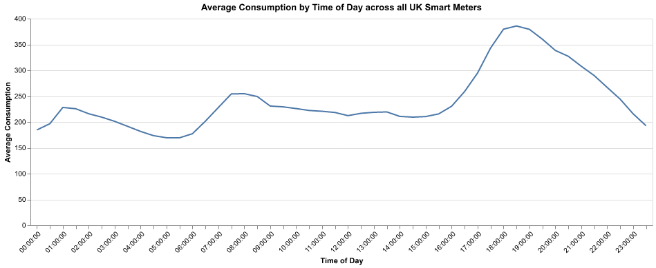
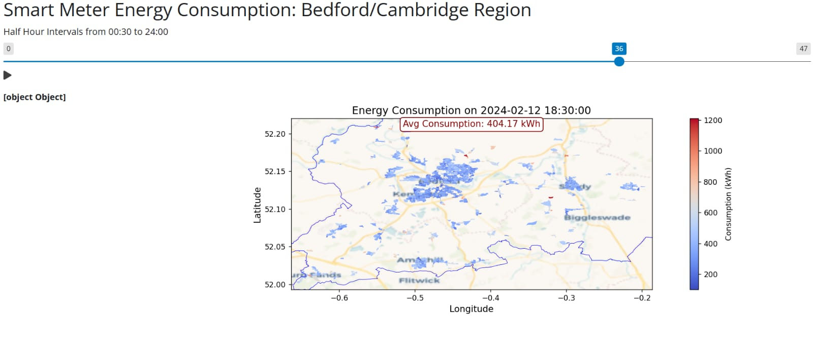
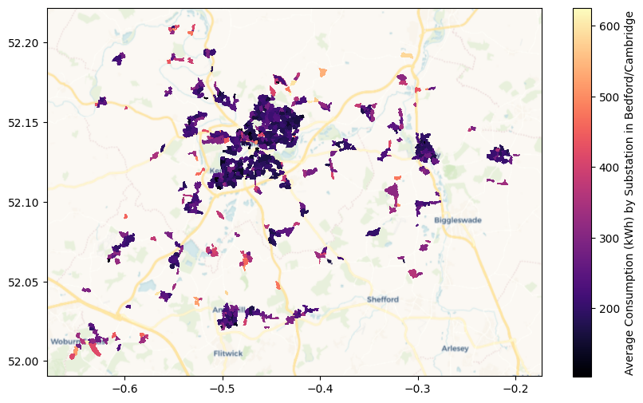

RendererRegistry.enable('png')PPHA 30538 Final Project Write Up: Electricity Consumption with Smart Meters in the UK
CODING PART (Not Counted in Page Limit):
Our smart meter data is from weave.energy and our shapefile data is from UK’s National Energy System Operator (NESO).
Step 1.1: Import and clean the data Source: https://github.com/centre-for-ai-and-climate/lv-feeder-smart-meter-data/blob/main/2024-02-12-aggregated-by-substation.csv.gz
Filtered to the Bedford/Cambridge region. Source: https://ukpowernetworks.opendatasoft.com/explore/dataset/ukpn-epn-area-operational-boundaries/information/
Added substation boundary data. Source: https://ukpowernetworks.opendatasoft.com/api/explore/v2.1/catalog/datasets/ukpn_secondary_postcode_area/records?limit=20&refine=dno%3A%22EPN%22
Step 1.2: Average consumption by substation
Step 1.3: A template example for Shiny App
Step 1.4: Graph average by time of day
WRITE UP:
Background
The United Kingdom has implemented a national program to replace traditional energy meters with smart meters [1]. These meters offer more accurate information on energy usage and costs to both suppliers and households using them [1]. Consumers who have better transparency on their energy consumption along with live information on their energy spending can more accurately make decisions about how much electricity they would like to consume. This can reveal patterns like the price or income demands of elasticity. Additionally, a wide rollout of smart meters can give us a comparison between the various regions of the UK, revealing trends over space and time.
Research Questions
Our project aims to… 1. Identify the seasonal, weekly, and daily peaks in energy usage. 2. Sequentially, determine how those peaks can be curbed with peak pricing.
Approach and Coding
We have limited our research to the UK Power Network (UKPN) Distribution Network Operator (DNO) and its EPN license area of Bedford/Cambridge smart meters because of the greater data availability, diverse demographic variability, and general computing and storage limits. The data available is for the month of February 2024.
Weaknesses and Difficulties
Some major weaknesses were in lack of data, especially as shown in the geo plots where there are gaps in substations. These are missing either because the EPN does not have smartmeters there or the population is too small to share the data for privacy reasons.
We addressed this by focusing on urban areas, where there is more data (although incomplete) and more consumers.
Plots
Plot 1 shows the trends in consumption by time of day. The largest peak is in the evening. 
Plot 2 shows a sample of our Shiny dashboard, which allows one to visualize consumption by time of day in the Bedford/Cambridge region. 
Plot 3 shows average consumption by substation overall, indicating where might be the locations primarily affected by peak pricing. 
Policy Implications
To manage peak electricity demand effectively, we recommend implementing a higher pricing rate during peak consumption hours, specifically from 5:00 pm to 9:00 pm. The current pricing is set at 24.50p per kWh (Source 2), while a recommended peak pricing rate of 30p per kWh (a 22.45% increase) could help mitigate excessive demand. This adjustment is expected to reduce demand during these peak periods by approximately 13.63%. Considering the price demand elasticity for electricity, which is −0.607 (indicating that a 1% price increase results in a 0.607% decrease in demand) (Source 3), this policy could encourage consumers to shift usage away from peak hours, leading to a more balanced electricity grid and improved energy resource management.
Future Directions
Future directions for research on electricity pricing and consumption analysis could focus on several key areas. One important approach is to study consumption percentiles to identify and potentially apply additional pricing strategies to the top X% of consumers during peak hours. This would allow for targeted interventions that better manage demand and ensure a fair distribution of energy costs. Another area for further investigation is the variability in consumption patterns between weekdays and weekends.
Additionally, integrating demographic data, such as income levels, into the analysis can provide insights into how different socio-economic groups impact overall consumption. This would enable the development of income-based pricing models that cater to varying levels of energy use across different demographics. Finally, mapping high-consumption regions can help identify areas with significant energy demand, facilitating more strategic allocation of resources and potential implementation of localized demand response programs.
Sources
- https://www.ofgem.gov.uk/get-smart-meter#:~:text=Smart%20meters%20are%20the%20new,when%20you%20can%20get%20one.
- https://www.theecoexperts.co.uk/solar-panels/kwh-electricity-prices
- https://doi.org/10.1016/j.enbuild.2023.113869